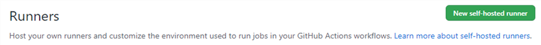
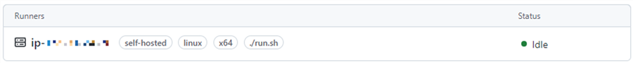

|
Virtual Hardware
Version 0.2 - beta
Examples Projects and GitHub Repositories
|


|
|
Virtual Hardware
Version 0.2 - beta
Examples Projects and GitHub Repositories
|
|
The Micro speech program analyzes an audio input with a voice recognition model that can detect 2 keywords - yes and no. The recognized keywords are then printed into a serial interface. The voice recognition model is implemented using TensorFlow Lite for Microcontrollers.
GitHub repository github.com/arm-software/VHT-TFLmicrospeech contains an implementation supporting Arm Virtual Hardware Targets (VHT) as well as real hardware boards.
Micro speech demonstrates how to use the processor and peripheral abstraction layers for simpler software portability across different targets. The example repository contains documentation with running instructions.
Table of contents
To connect to the running instance, you will need its Public IPv4 address. If you don't have it already, you can get from the EC2 > Instances.
Use SSH command on Linux, MacOS or Windows Powershell:
ssh -i <key.pem> ubuntu@<AMI_IP_addr>
Or, if using MobaXterm on Windows:
<AMI_IP_addr> as Remote hostubuntu as username<key.pem>Or, if using PuTTY:
ubuntu@<AMI_IP_addr> in Session > Host namekey.pem in Session > Connection > SSH > Auth > Private key file for authenticationThe Arm Virtual Hardware AMI comes with an IDE (Visual Studio Code) which can be accessed with a web browser. To access it, you will need to:
Start a SSH tunnel to the instance and forward port 8080. On Linux, MacOS or Windows Powershell:
ssh -i <key.pem> -N -L 8080:localhost:8080 ubuntu@<AMI_IP_addr>
The -N option holds the SSH tunnel connection and does not allow to execute other remote commands. This is useful for just forwarding ports.
Or, with MobaXterm on Windows:
8080 in My computer > Forwarded port<AMI_IP_addr> in SSH serverubuntu in SSH login22 in SSH portlocalhost in Remote server8080 in Remote port<key.pem>VNC is a protocol to enable remote desktop. The instruction below will securely enable VNC through a SSH tunnel.
In the AMI terminal:
Enable VNC password (no need to enter a view-only password)
vncpasswd
Start the VNC server for the session
sudo systemctl start vncserver@1.service
To restart the VNC server after reboot
sudo systemctl enable vncserver@1.service
On your local machine:
Forward port 5901 on local machine. On Linux, MacOS or Windows Powershell:
ssh -I <key.pem> -N –L 5901:localhost:5901 ubuntu@<AMI_IP_addr>
Then, connect VNC client (e.g. Remmina, TigerVNC) to port 5901. You will be prompted for password.
Or, with MobaXterm on Windows:
localhost as Remote hostname5901 as Port<AMI_IP_addr> as Gateway hostubuntu as Username22 as Port<key.pem>git config --global user.name YourGitHubName git config --global user.email Your.Email@domain.com git config --list git clone https://github.com/<YourGitHubName>/VHT-TFLmicrospeech
In the AMI terminal:
Navigate to build folder
cd VHT-TFLmicrospeech/Platform_FVP_Corstone_SSE-300_Ethos-U55
Use cp_install utility (do once) to install the necessary CMSIS Packs dependencies
cp_install.sh packlist
Use (cbuild)[https://arm-software.github.io/CMSIS_5/Build/html/index.html] to build the software project (this should take about a minute)
cbuild.sh microspeech.Example.cprj
In the AMI terminal:
Run script to load application to model and execute
./run_example.sh
This will run the application until it terminates (about a minute). You can terminate the simulation faster by specifying the number of cycles:
./run_example.sh --cyclelimit 100000000
Fast Models [11.16.14 (Sep 29 2021)] Copyright 2000-2021 ARM Limited. All Rights Reserved. telnetterminal0: Listening for serial connection on port 5000 telnetterminal1: Listening for serial connection on port 5001 telnetterminal2: Listening for serial connection on port 5002 telnetterminal5: Listening for serial connection on port 5003 Ethos-U rev afc78a99 --- Aug 31 2021 22:30:42 (C) COPYRIGHT 2019-2021 Arm Limited ALL RIGHTS RESERVED Heard yes (146) @1000ms Heard no (145) @5600ms Heard yes (143) @9100ms Heard no (145) @13600ms Heard yes (143) @17100ms Heard no (145) @21600ms Info: Simulation is stopping. Reason: Cycle limit has been exceeded. Info: /OSCI/SystemC: Simulation stopped by user. [warning ][main@0][01 ns] Simulation stopped by user --- cpu_core statistics: ------------------------------------------------------ Simulated time : 23.999999s User time : 25.804117s System time : 3.336213s Wall time : 29.132544s Performance index : 0.82 cpu_core.cpu0 : 26.36 MIPS ( 768000000 Inst) -------------------------------------------------------------------------------
In the AMI terminal:
Navigate to source folder
cd ../micro_speech/src/
Edit command_responder.cc using the nano text editor for example:
nano command_responder.cc
And change output (e.g. add your name as below)
TF_LITE_REPORT_ERROR(error_reporter, “YourName Heard %s (%d) @%dms", found_command, score, current_time);
cd ../../Platform_FVP_Corstone_SSE-300_Ethos-U55 cbuild.sh microspeech.Example.cprj ./run_example.sh
In the AMI terminal
cd ../micro_speech/src/ git add .
git commit -m "Added my name to output message"
git remote -v
Submit changes back to your repository
git push
You will be asked your login and Personal Access Token (password) information.
To enable Personal Access Token in GitHub:
In your own fork on Github, observe the change registered
https://github.com/<YourGitHubName>/VHT-TFLmicrospeech/blob/main/micro_speech/src/command_responder.cc
In your own fork on GitHub
New self-hosted runner
In the AMI terminal
cd /home/ubuntu
./run.sh Connected to GitHub yyyy-mm-dd hh:mm:ss: Listening for JobsIn Github, go the Runner tab to see the runner listed and idle

cd VHT-TFLmicrospeech/micro_speech/src git add . git commit -m "Original message" git push
<timestamp>: Listening for Jobs <timestamp>: Running job: ci_demonstration <timestamp>: Job ci_demonstration completed with result: Succeeded
command_responder.cc and remove the semicolon at the end of the line: TF_LITE_REPORT_ERROR(error_reporter, “YourName Heard %s (%d) @%dms", found_command, score, current_time)
git add . git commit -m "Example of failure" git push
<timestamp>: Running job: ci_demonstration <timestamp>: Job ci_demonstration completed with result: FailedSame in GitHub's Actions tab
The Machine Learning Group at Arm have developed other examples which can be run in with the Arm Virtual Hardware AMI.
The instructions in the quick start guide are easily reproducible in the AMI. You will need to enable VNC to visualize.
For more information on Arm's solution for IoT: https://www.arm.com/solutions/iot/total-solutions-iot
Have questions, comments, or suggestions? Visit the Arm Virtual Hardware support forum